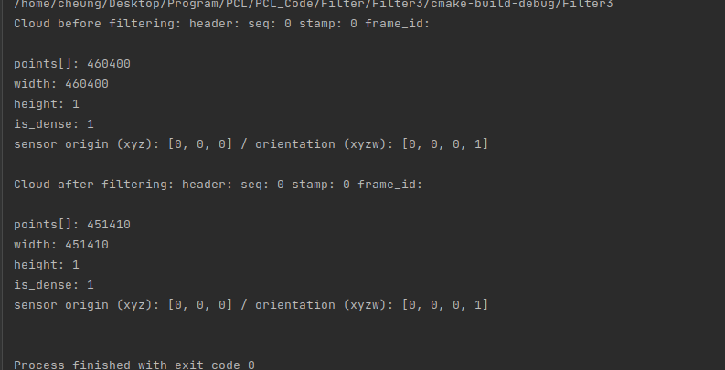
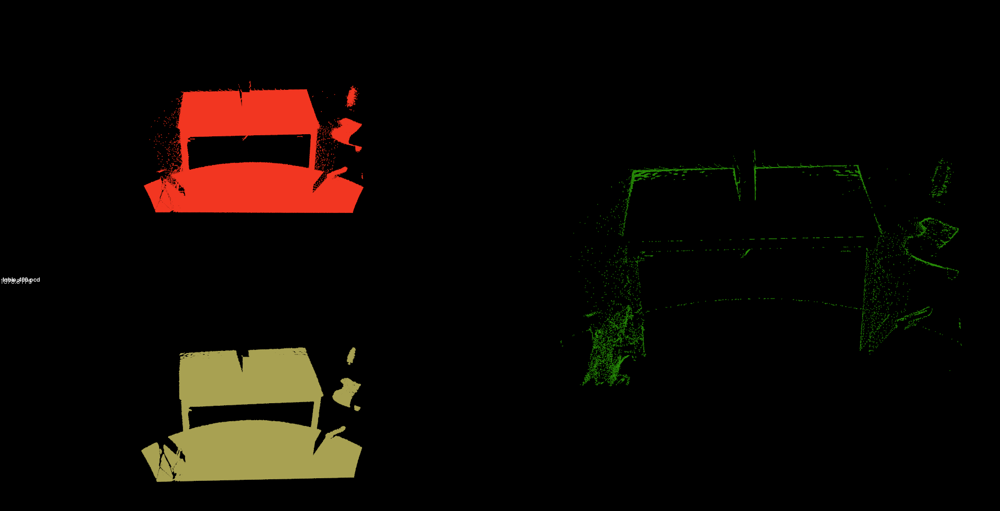

使用统计分析技术，从一个点云数据中集中移除测量的噪声点(也就是离群点)。噪声点会导致局部点云特征(比如采样点处法向量或曲率变化)的计算复杂，这会导致错误的数值，反过来就会导致点云配准等后期的处理失败。
结局方法：对每个点的邻域进行一个统计分析，并修剪掉一些不符合一定标准的点。稀疏离群点移除方法基于在输入数据中对点到临近点的距离分布的计算，对每一个点，计算它到它的所有临近点的平均距离，假设得到的结果是一个高斯分布，其形状是由均值和标准差决定的，平均距离在标准范围之外的点，可以被定义为离群点并可以从数据中去除。
1
2
3
4
5
6
7
8
9
10
11
12
13
14
15
16
17
18
19
20
21
22
23
24
25
26
27
28
29
30
31
32
33
34
35
| #include <iostream>
#include <pcl/io/pcd_io.h>
#include <pcl/point_types.h>
#include <pcl/filters/statistical_outlier_removal.h>
int main(int argc,char ** argv){
pcl::PointCloud<pcl::PointXYZ>::Ptr cloud(new pcl::PointCloud<pcl::PointXYZ>);
pcl::PointCloud<pcl::PointXYZ>::Ptr cloud_filtered(new pcl::PointCloud<pcl::PointXYZ>);
pcl::PCDReader reader;
reader.read<pcl::PointXYZ>("table_400.pcd",*cloud);
std::cout<<"Cloud before filtering: "
<<*cloud<<std::endl;
/************************************************************
创建滤波器，对每个点搜索的临近点个数限制为50，设定标准差为1，也就是说，当一个点对周围50个点
的平均距离超过了1个标准差，那这个点就被标记为离群点，并将其移除，存储起来
***********************************************************/
pcl::StatisticalOutlierRemoval<pcl::PointXYZ> sor;//实例化
sor.setInputCloud(cloud);//设定输入点云
sor.setMeanK(50);//设定搜索点数
sor.setStddevMulThresh(1.0);//标准差阈值
sor.filter(*cloud_filtered);//输出离群点之外的点
std::cout<<"Cloud after filtering: "
<<*cloud_filtered<<std::endl;
pcl::PCDWriter writer;
writer.write<pcl::PointXYZ>("table_400_res.pcd",*cloud_filtered);
sor.setNegative(true);//设定setNegative为true时，则离群点被存储，默认情况下为false
sor.filter(*cloud_filtered);
writer.write<pcl::PointXYZ>("table_400_res1.pcd",*cloud_filtered);
return 0;
}
|

滤波前后的点数比较

滤波前（左上） 滤波后（左下） 离群点（右）